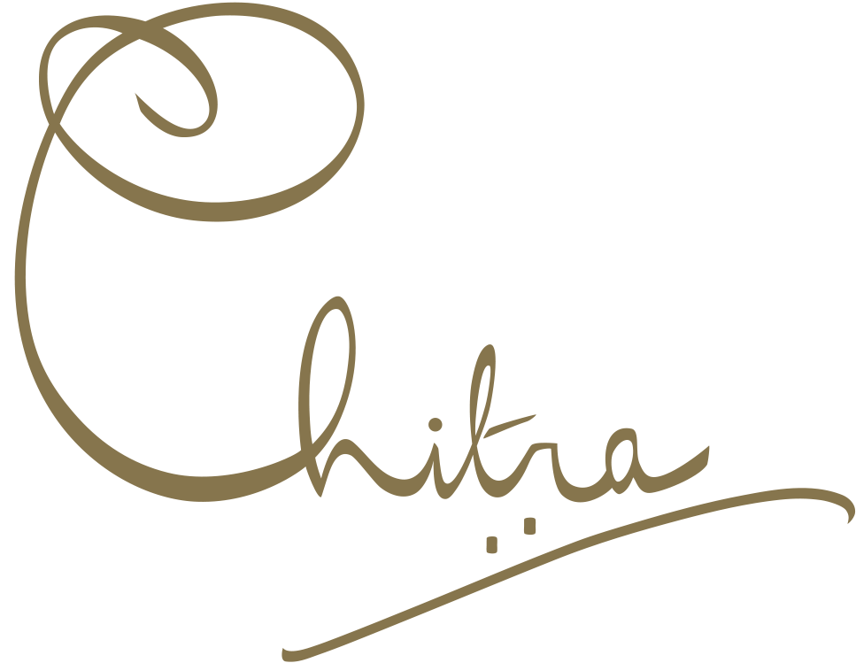
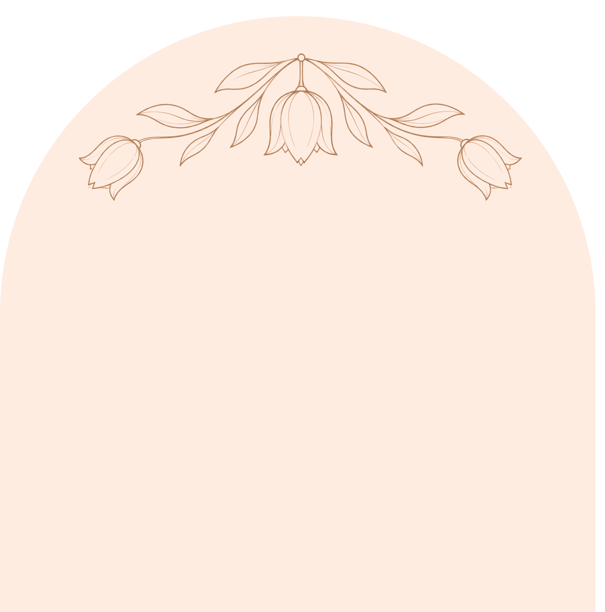
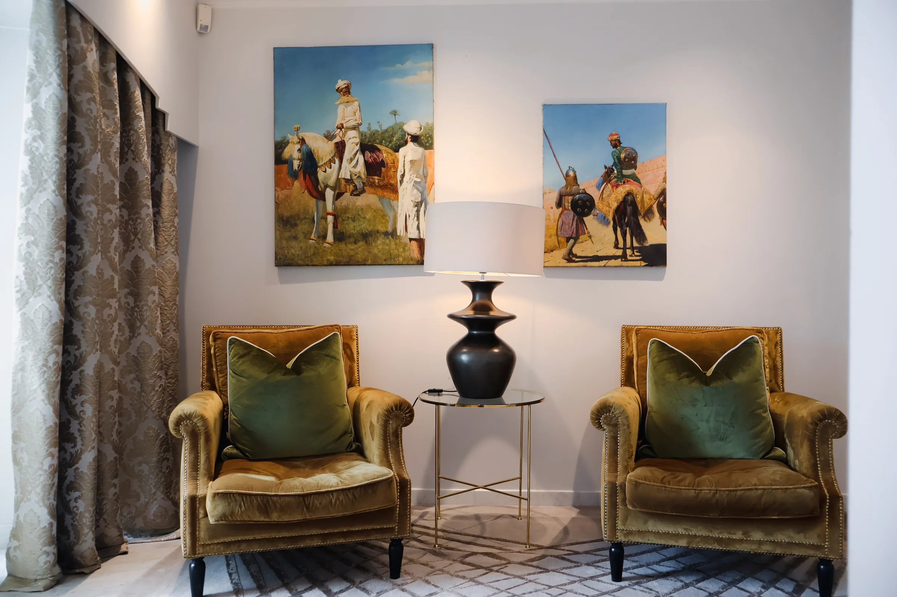
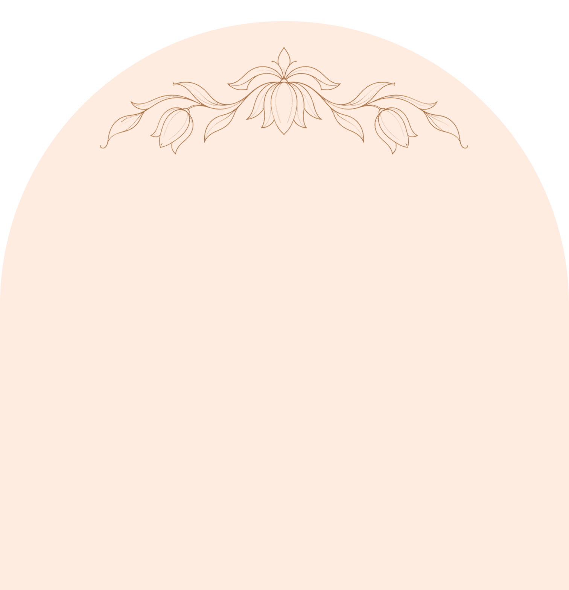
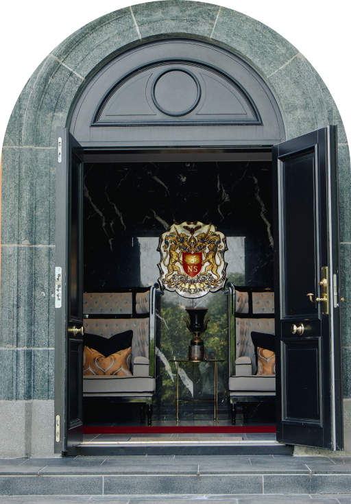
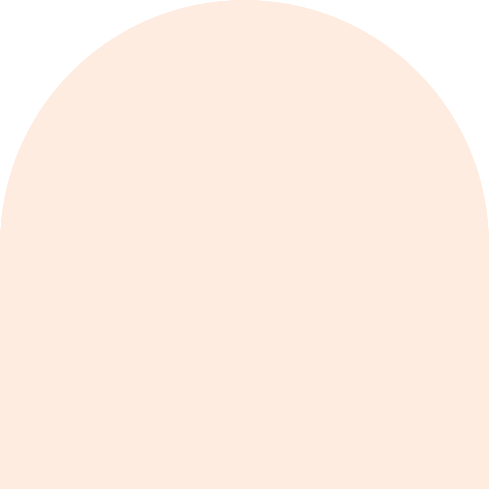
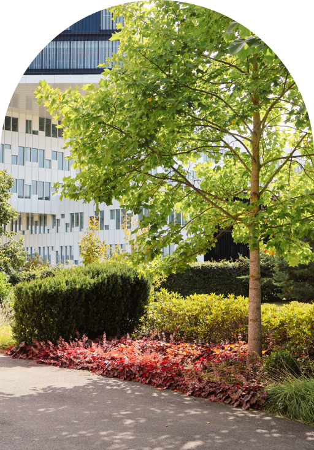
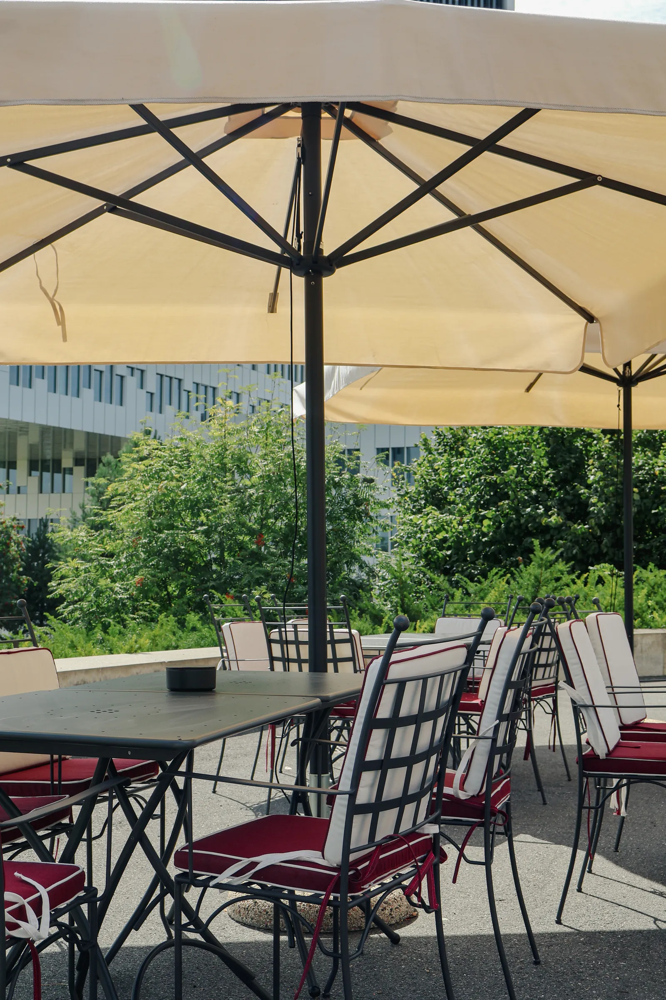

Et hus med en historie
Der indisk kulturarv møter skandinavisk skjønnhet.

Et sted for mennesker
Chitra House er skapt som et sted for møter, kultur og minner. Her får tradisjon og moderne eleganse dele samme rom.


Visste du?
Chitra House kombinerer indisk kulturarv med skandinaviske omgivelser ved Oslofjorden.

Historier i hver detalj
Fra materialer og møbler til lys og utsikt er huset formet for å gi hver feiring sin egen stemning.


Et hus med utsikt
Et besøk på Chitra House handler om mer enn rommene. Det handler om følelsen som blir igjen.
Se gallerietEn reise mellom kulturer
Indisk arv møter nordisk ro i et hus bygget for fellesskap.
Et sted å komme sammen.
Velkommen inn
Utforsk huset, historien og rommene som gjør Chitra House til noe helt eget.
Planlegg et besøk